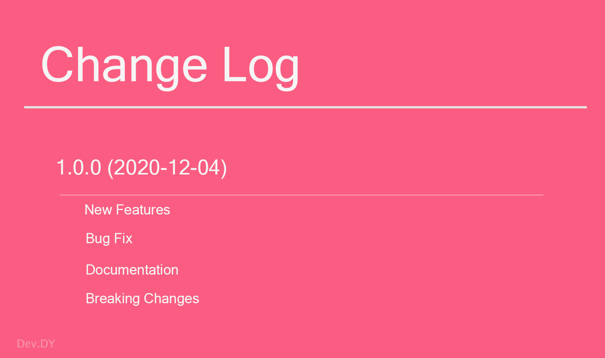
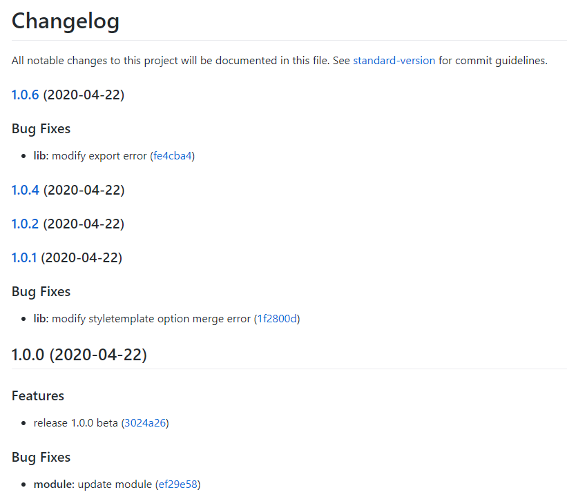
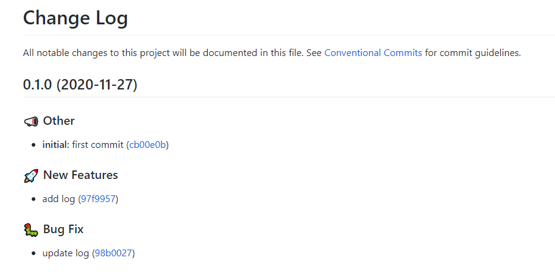
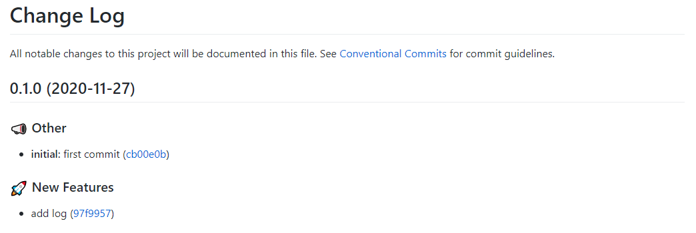
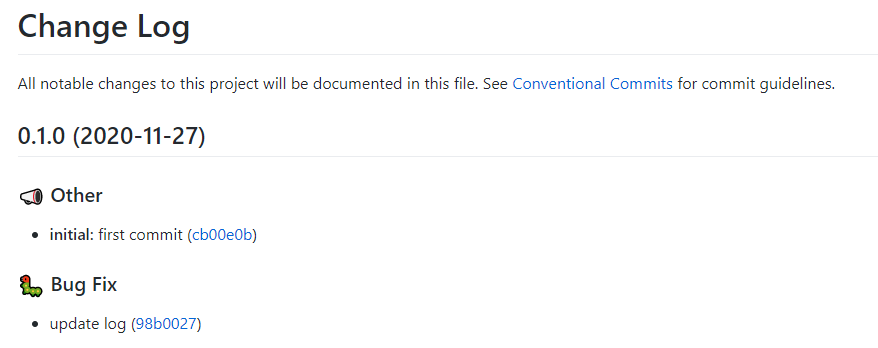

Lerna에서 lerna version을 사용하여 CHANGELOG를 생성해보자.

Mono-Repo를 생성할 수 있는 도구인 Lerna에서 CHANGELOG를 생성하는 방법에 대하여 알아보자.
Mono-Repo 구조에서는 패키지가 다르기 때문에 서로 다른 CHANGELOG를 생성해야 한다. 이를 위해서 lerna의 명령어인 lerna version을 사용하여 생성할 수 있다. 물론 이를 더 쉽게 생성해 줄 수 있는 lerna-changelog라는 훌륭한 오픈 소스가 있지만 이번 포스트에서 순수하게 lerna version을 사용하여 내 입맛대로 릴리즈 노트를 작성하는 방법에 대해 말해보려 한다.
lerna를 사용하여 직접 Mono-Repo 구조를 생성하고 수정과 commit, 그리고 push를 통하여 Git에 반영 후 CHANGELOG를 생성하는 방법을 배워보자.
먼저 이번 포스팅을 보기 전 Mono-Repo와 Lerna에 대한 설명은 Lerna를 활용한 Mono-Repo 구축 완벽 가이드 - 개념 정리와 Lerna를 활용한 Mono-Repo 구축 완벽 가이드 - 예제를 통한 완벽 파악 참고하도록 하자.
예제 프로젝트 생성
예를 위해 간단하게 Mono-Repo 구조를 가진 프로젝트와 패키지를 생성하고 기본적으로 필요한 모듈을 설치해보도록 하겠다. 그리고 실제 Github에 commit과 push가 필요하므로 적당한 Repository를 하나 생성해 놓도록 하자.
먼저 lerna 사용을 위해 설치를 진행하자.
|
그리고 lerna-changelog-example 폴더를 생성한 다음 해당 경로에서 prompt를 열고 git을 먼저 연동하자.
|
git을 사용할 준비가 되었다면 .gitignore를 생성하여 commit을 제외하도록 하자.
.gitignore.idea
node_modules
package.json과 lerna.json을 수정하자.
설정들은 가장 기본적인 설정이기 때문에 별도의 설명은 하지 않겠다. Lerna를 활용한 Mono-Repo 구축 완벽 가이드 - 개념 정리와 Lerna를 활용한 Mono-Repo 구축 완벽 가이드 - 예제를 통한 완벽 파악 참고하도록 하자.
package.json{
"name": "root",
"private": true,
"workspaces": [
"packages/*"
],
"devDependencies": {
"lerna": "^3.20.2"
}
}
lerna.json{
"packages": [
"packages/*"
],
"version": "0.1.0",
"useWorkspaces": true
}
이제 두 가지 모듈을 설치할 것이다. commitlint와 husky를 설치할 것인데 conventional-commit을 위해 commitlint를 설치할 것이고, 이를 git hook에서 사용하기 위해 husky를 설치할 것이다.
이 두 가지에 대해서는 오픈 소스(Open-Source) 구조와 모듈 파악하기에서 확인해 보도록 하자.
|
위 모듈을 설치하였다면 설정 파일을 생성하여 설정을 지정해주자.
husky.config.jsmodule.exports = {
hooks: {
'commit-msg': 'commitlint -E HUSKY_GIT_PARAMS'
}
}
commitlint.config.jsmodule.exports = {
extends: [
'@commitlint/config-conventional'
]
}
commitlint와 husky를 지정해 주었기 때문에 이제 conventional-commit의 규칙대로 commit-message를 작성하지 않으면 commit을 허용할 수 없다.
이제 가장 기본적인 설정이 완료되었으니 패키지를 생성하자.
이 예제에서는 패키지 명을 template와 core로 지정하도록 하겠습니다.
|
위 명령어대로 생성한다면 기본적인 패키지가 생성될 것이다.
여기까지 해서 아주 간단한 프로젝트를 생성하였다.
이 상태에서 commit을 진행하고 push까지 진행 후 lerna version을 사용하면 아래와 같은 형식으로 CHANGELOG는 생성된다.
e.g) CHANGELOG.md

하지만 이 포스트에서 설명하고자 하는 것은 이런 기본적인 내용을 포함하고 추가로 우리가 CHANGELOG를 커스텀하게 작성하는 방법을 적으려 한다.
CHANGELOG 커스텀
사실 CHANGELOG 뿐 아니라 lerna의 Document를 살펴본다면 이외에 많은 설정이 있다. 그 설정은 다소 복잡할 수도 있고 하나의 블로그 글로는 담기 많기 때문에 여기서는 CHANGELOG에 대해서만 다뤄보자.
최초 우리가 생성한 lerna.json을 수정하도록 하자.
lerna.json{
"packages": [
"packages/*"
],
"version": "0.1.0",
"useWorkspaces": true,
"command": {
"version": {
"conventionalCommits": true,
"changelogPreset": {
"name": "conventional-changelog-conventionalcommits",
"types": [
{
"type": "feat",
"section": ":rocket: New Features",
"hidden": false
},
{
"type": "fix",
"section": ":bug: Bug Fix",
"hidden": false
},
{
"type": "docs",
"section": ":memo: Documentation",
"hidden": false
},
{
"type": "style",
"section": ":sparkles: Styling",
"hidden": false
},
{
"type": "refactor",
"section": ":house: Code Refactoring",
"hidden": false
},
{
"type": "build",
"section": ":hammer: Build System",
"hidden": false
},
{
"type": "chore",
"section": ":mega: Other",
"hidden": false
}
]
}
},
"publish": {
"conventionalCommits": true
}
}
}
위 내용은 lerna의 command 명령어에 대한 설정을 지정한 것이다.
command 속성에 version이라고 명시가 되어있기 때문에 이는 lerna version에 대한 명령어를 설정한 것이다. 우선 conventionalCommits: true로 인하여 conventional-commit 사용하며, 그 아래에서 changelogPreset을 통하여 CHANGELOG에 대한 사전 설정을 한다.
changelogPreset의 속성을 하나씩 보도록 하자.
위 두 가지의 설정만으로도 그럴싸한 CHANGELOG를 생성할 수 있다. 이제 저장하고 실제로 CHANGELOG를 생성하여 확인해 보도록 하자.
예제를 위해 fix, feat, chore 3가지 type으로 커밋을 해보도록 하자.
|
commit message를 작성 후 push까지 진행하였다면 lerna version을 사용하여 버전 상향과 동시에 CHANGELOG를 생성자. 이때 CHANGELOG가 생성되고 git에 자동으로 push까지 이루어진다.
|
github에서 CHANGELOG가 생성되었는지 확인해보자.
root/CHANGELOG.md

root 경로의 CHANGELOG를 살펴보면 두 패키지 간 커밋된 내용이 작성되어있다. 즉 모든 커밋 메시지는 root의 CHANGELOG에 남게 되어있다.
이제 각 패키지의 CHANGELOG를 살펴보자.
core/CHANGELOG.md

template/CHANGELOG.md

각 패키지는 해당 패키지에서 수정되고 커밋된 내용이 남아있는 것을 확인 할 수 있으며 우리가 커스텀하게 작성한 타이틀도 반영된 것을 볼수 있다. 또한 chore를 사용해 남긴 📣 Other에 대한 메시지도 남아있는 것을 확인 할 수 있다.
여기까지 해서 CHANGELOG에 대해 알아보았다.
CHANGELOG를 릴리즈 노트와 동일하며 이력을 남기기 때문에 가장 최적으로 작성하는 것이 바람직하다. 이를 위해서는 위 내용을 알아두면 좋다. 특히 Mono-Repo 구조에서는 같은 버저닝으로 간다하더라도 패키지가 다르기 때문에 CHANGELOG를 생성하는 것이 까다로울 수 있다. 하지만 위와 같은 방법으로 각 패키지 별로 CHANGELOG를 작성한다면 이력 관리에서 좋은 영향을 준다.